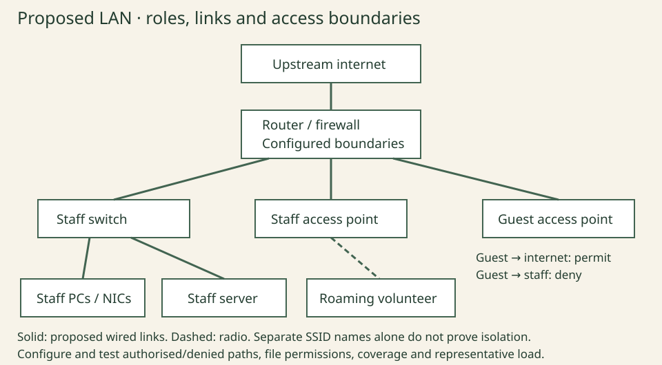

Draw and justify the centre LAN
Unit 4 · fictional community-centre client brief. Read the chapter explanation first. These are worked decisions, not observed learner results.
Worked decisions
| Focus | Decision and explanation |
|---|---|
| Client brief | Fixed staff desks need reliable file/print access; a roaming volunteer needs wireless coverage; visitors need internet access without staff-file access. Identify endpoints, services, media, capacity and access boundaries before choosing equipment. |
| Protocol jobs | IP supports addressing/routing; TCP supplies a reliable ordered byte stream for applications that use it; HTTP defines web exchanges. HTTPS protects HTTP communication through secure transport, using TLS in modern deployments. The syllabus’s SSL wording is legacy terminology. Not every web version uses TCP. |
| Link standards | Compare IEEE 802.3 Ethernet for fixed points with the IEEE 802.11 wireless LAN family for mobility. The syllabus label “802.11x” is treated as its broad wireless wording, not the different IEEE 802.1X authentication standard. Advertised link rates are not guaranteed application throughput. |
| Proposed design | The diagram proposes staff Ethernet through a switch, staff and guest wireless roles and an upstream router/firewall. Guest separation is a configuration requirement, not a result established by drawing separate boxes or creating two Wi-Fi names. |
| Layered controls | Firewall rules constrain traffic; account/password controls constrain authorised use; physical security protects equipment/ports. A firewall does not decide every user’s file permission, and a locked room does not replace account controls. |
| Justification and tests | Explain each choice against the brief and a trade-off. Tests include staff printing, authorised file access, guest-to-staff denial, permitted guest internet, coverage and representative load. Label proposed and observed results separately; no real network configuration is supplied by this drawing. |

Check your reasoning
Two SSIDs have different names. Has isolation from staff files been demonstrated?
Compare your explanation
No. The required separation needs appropriate configuration and observed permitted/denied-path tests.
Apply independently
Work through these steps for your own version of the community-centre brief. Retain your own output and actual observations, separately from the supplied model.
- Define your changed centre brief and draw endpoints, links, service roles, upstream boundary and intended staff/guest separation.
- Annotate protocol and link-standard choices, plus firewall, account and physical controls. Justify at least one media and one security trade-off.
- Write expected tests for allowed and denied paths, coverage and capacity. Obtain approval before any classroom network operation.
- If only designing, mark actual configuration and network-test results unverified. If an approved lab is available, record its actual settings/results and revise/retest a failed check.
Use this within the existing chapter task, not an extra assessed project or additional teaching week. Record expected and actual results separately.
Evidence to retain
- A labelled learner LAN and brief-linked justification, not an unannotated copied diagram.
- Expected and actual allowed/denied path results remain separate.
- No claim that guest isolation or coverage is established by a proposal.
Actual learner performance, native application output and independent teacher review remain unverified. Supplied model results must not be copied into an observed-result log.